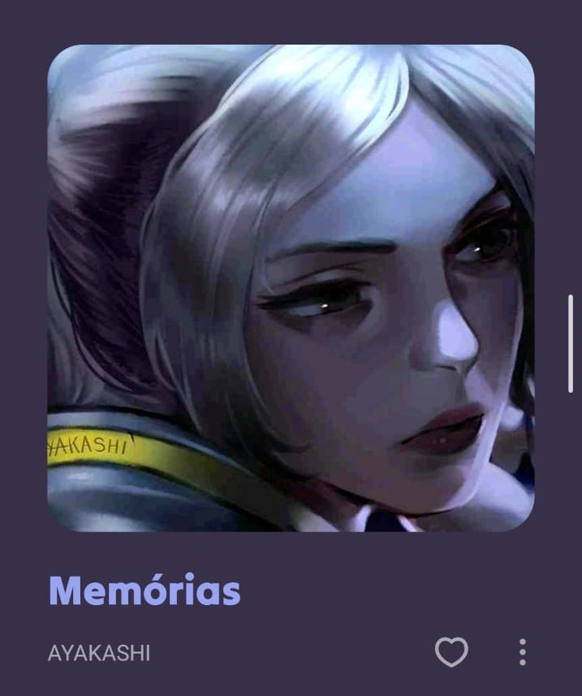

Meus interesses

RPG de mesa
A capacidade de contar histórias de diversos personagens de diversas maneiras me atrai tanto que simplesmente poderia jogar RPG durante horas sem me cansar, mas temos que ter um limite para tudo, então muitas vezes preciso guardar um pouco da minha empolgação.
O RPG também me permite explorar ideias, desenvolver personagens e criar histórias junto com outras pessoas. É uma das formas de contar histórias de que mais gosto.
Música

Música é algo que não consigo me imaginar sem. Escuto enquanto faço praticamente qualquer coisa, até mesmo enquanto escrevo.
Ela também complementa minha paixão por contar histórias: uma música pode ajudar a criar um clima tenso, romântico ou transmitir diferentes emoções para uma cena.
Para quem tiver curiosidade, aqui está uma referência musical relacionada a Ordem Paranormal: Sunny - Coração da Morte | Thiago Fritz .
Ouça a trilha sonora
O áudio acima pode ser reproduzido diretamente nesta página, sem iniciar automaticamente.